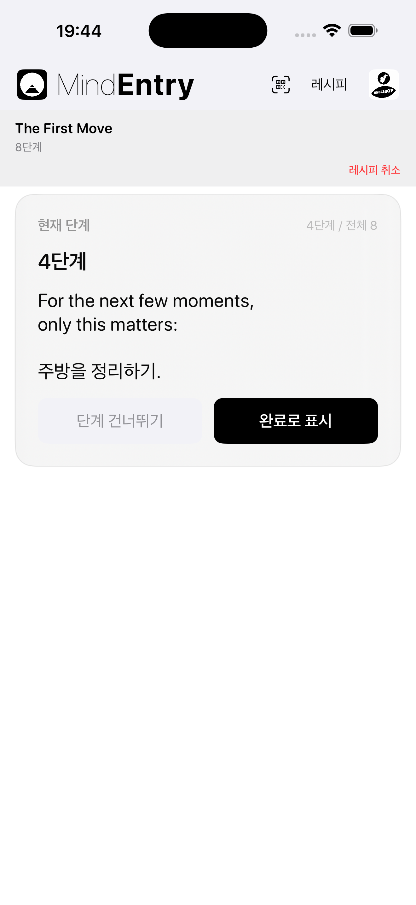
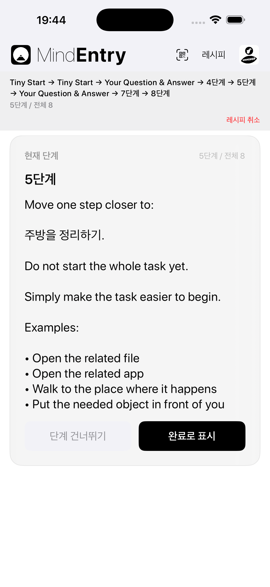
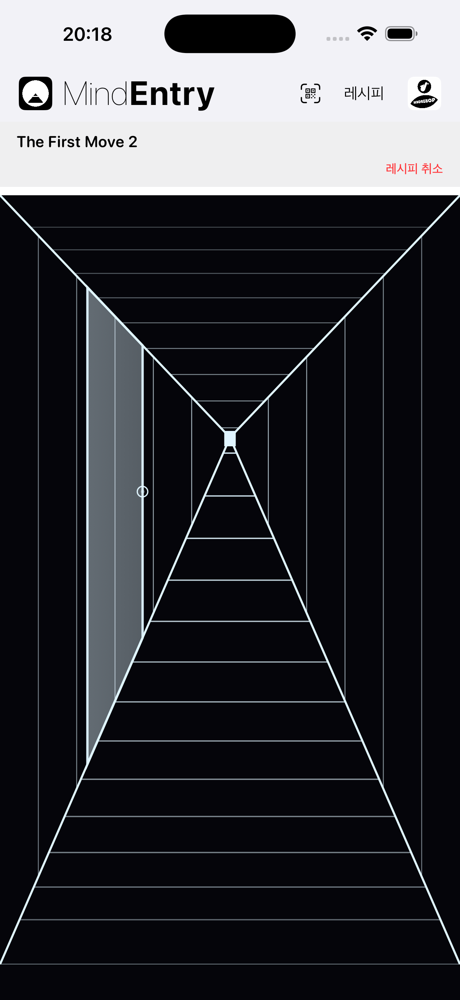
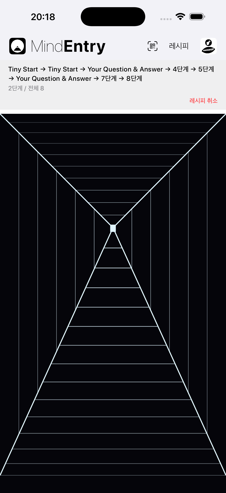

레시피를 진행하는 또 다른 방법.
Hallway Mode는 MindEntry 레시피를 위한 대체 표시 모드입니다.
레시피 자체는 바뀌지 않습니다. 바뀌는 것은 레시피를 지나가는 방식입니다.
Hallway Mode에서는 한 단계에서 다음 단계로 바로 이동하는 대신, 단계와 단계 사이에 조용한 공간이 놓입니다.
당신은 복도를 따라 앞으로 이동합니다. 잠시 후 문이 나타납니다. 문을 열면 다음 단계가 나타납니다.
같은 레시피. 다른 경험.
때로는 어려운 부분이 단계 자체가 아닙니다. 레시피 전체를 하나의 과정으로 바라보는 일입니다.
Hallway Mode는 다음에 필요한 것에만 주의를 두도록 하여 그 마찰을 줄여 줍니다.
레시피는 바라보는 대상이 아니라, 통과해 가는 경험이 됩니다.
직접적이고, 명확하며, 효율적입니다.
Standard Mode는 레시피를 단계의 순서로 보여 줍니다.
레시피를 가장 단순하고 빠르게 진행하고 싶을 때 적합합니다.
단계 → 완료 → 다음 단계
마음이 이미 구조를 따라갈 준비가 되어 있을 때 Standard Mode는 자연스럽게 작동합니다.


단계와 단계 사이의 조용한 공간.
Hallway Mode는 단계 사이에 이동을 추가합니다.
복도는 처음에 문이 보이지 않는 상태로 시작됩니다. 앞으로 이동합니다. 짧고 매번 조금씩 다른 거리를 지나면 문이 나타납니다. 문손잡이를 탭하면 다음 단계가 열립니다.
단계 → 앞으로 이동 → 문 → 다음 단계
다음 문은 몇 번 앞으로 이동한 뒤 나타납니다. 거리는 단계마다 조금씩 달라지므로, 레시피는 체크리스트보다는 안내받으며 지나가는 통로처럼 느껴집니다.
여러 문 중에서 선택하지 않습니다. 뒤로 돌아가지 않습니다. 앞으로 건너뛰지도 않습니다. 복도는 그저 다음에 필요한 곳으로 당신을 이끕니다.


같은 단계라도 그 단계에 도달하는 방식에 따라 다르게 느껴질 수 있습니다.
마음이 맑을 때는 목록이 도움이 될 수 있습니다.
하지만 마음이 멈춰 있거나, 압도되었거나, 저항감을 느끼고 있을 때는 목록이 또 다른 부담처럼 느껴질 수 있습니다.
Hallway Mode는 질문을 다음과 같이 바꿉니다.
아직 몇 단계나 남았지?
에서
다음 문은 어디에 있지?
로.
이 작은 변화는 인지적 마찰을 줄일 수 있습니다.
전체 과정을 관리하도록 요구하는 대신, Hallway Mode는 마음에 단 하나의 단순한 행동만 제시합니다.
앞으로 나아가기.
인터랙티브한 레시피가 입력 양식이 아니라 안내받는 여정처럼 느껴질 수 있습니다.
Stateful Recipes는 실행 중 사용자가 입력하거나 선택한 내용에 반응할 수 있습니다.
Standard Mode에서는 이러한 상호작용이 구조화된 작업 흐름처럼 느껴질 수 있습니다.
질문 → 답변 → 다음 단계
Hallway Mode에서는 같은 상호작용이 안내받는 통로처럼 느껴질 수 있습니다.
문 → 질문 → 앞으로 이동 → 다음 문
이것은 마음이 얼어붙었을 때 특히 중요합니다.
멈춰버린 마음에는 더 많은 선택지가 필요한 것이 아닙니다. 더 작은 다음 움직임이 필요합니다.
Hallway Mode는 사용자가 전체 구조를 머릿속에 유지하지 않아도 레시피의 상호작용성을 유지해 줍니다.
대부분의 앱은 단계 자체에 집중합니다.
Hallway Mode는 그 사이의 공간에 집중합니다.
그 공간은 다음 단계가 시작되기 전에 이전 단계가 끝날 수 있도록 해 줍니다.
레시피는 여전히 MindEntry에서 실행됩니다. 단계도 동일하게 작동합니다. 달라지는 것은 마음이 각 단계에 도달하는 방식입니다.
Hallway Mode는 단계를 제거하여 레시피를 더 쉽게 만드는 것이 아닙니다.
다음 단계를 마주하기 쉽게 만드는 것입니다.
Hallway Mode does not make the recipe easier by removing steps. It makes the next step easier to meet.
Copyright © 2026 MINDBEBOP — All rights reserved.